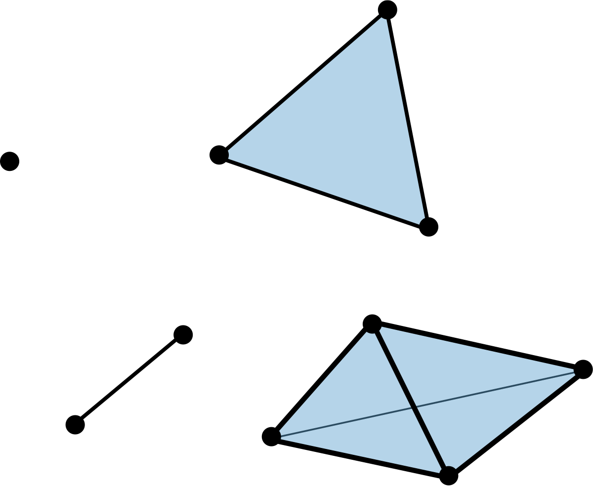
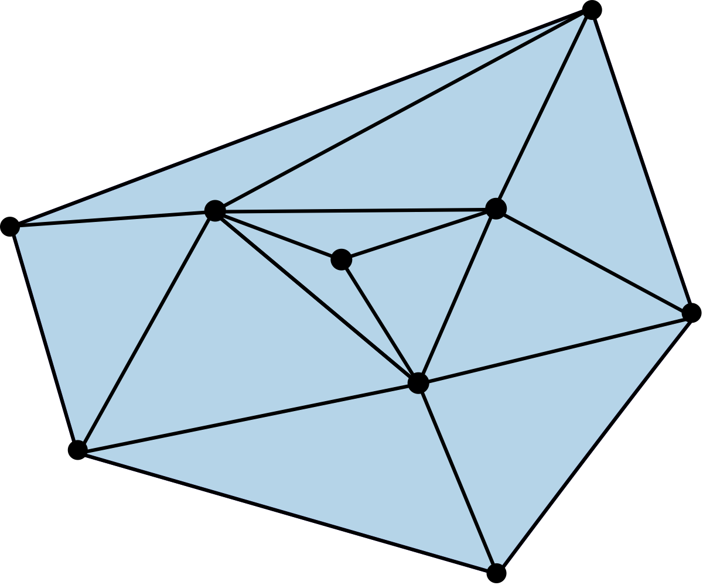
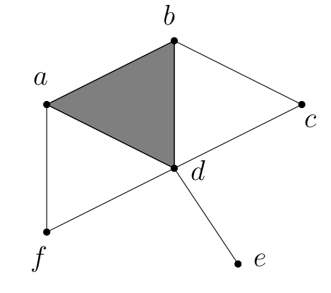
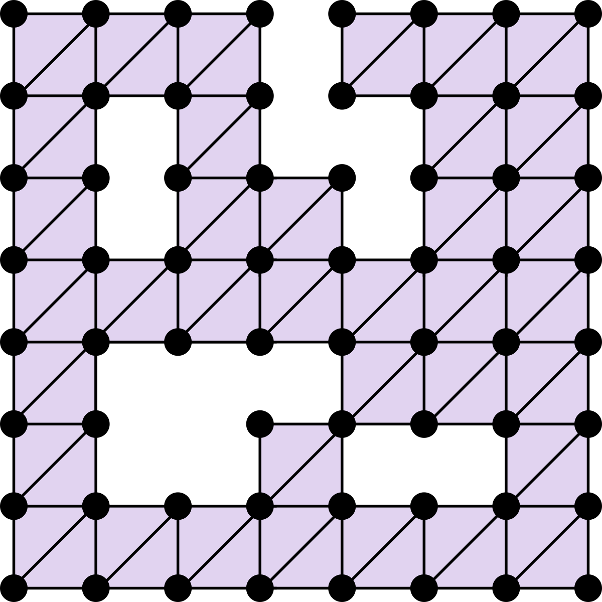
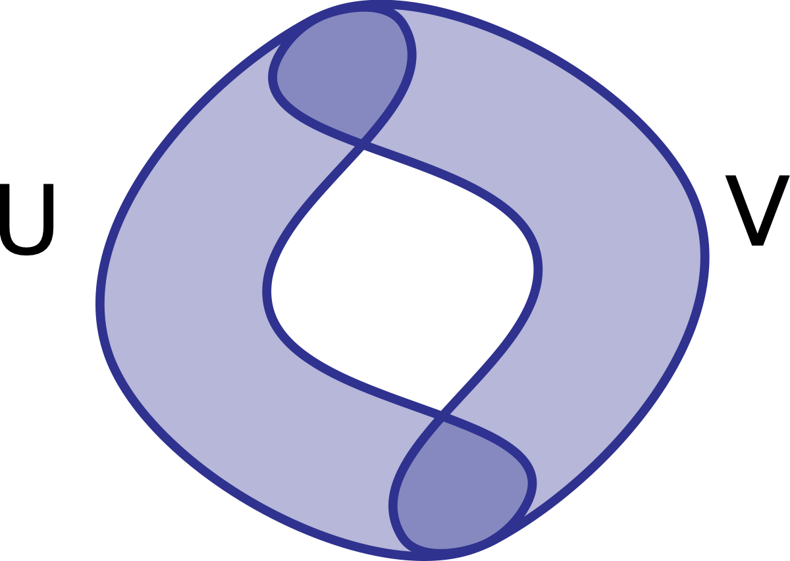

Slide transcript#
I am working on finding ways to increase accessibility of the beamer slides provided. The following is an automatically generated transcript from the pdf of the slides but is still not perfect. I would be happy to hear feedback on how this transcript can be improved for additional usefulness.
Lecture 3 - Simplicial Complexes#
Goals#
Goals for today: Ch 2.1
Define geometric/abstract simplicial complexes
Define simplicial maps
Idea#
A simplicial complex is a generalizion of a graph


General position#
A set \(\{a_0,\cdots,a_n\} \subset \mathbb{R}^N\) is in general position if no \(k\) of them lie in a \(k-2\) dimensional hyperplane (\(k = 2,3,\ldots,N+1\)).
Warning: Papers will often modify this definition to suit their purposes!
\(n\)-Plane#
Given a set of points \(\{a_0,\cdots,a_n\}\) in general position, the \(n\)-plane \(P\) spanned by the points is $$P = \left{\sum_{i=0}^n t_i a_i \in \mathbb{R}^N \mid \sum t_i = 1\right}.
such that \(t_i \geq 0\) \(\forall i\).
Barycentric coordinates#
The numbers \(t_i\) are uniquely determined by \(x\) and are called barycentric coordinates.
More definitions#
\(\{a_0,\cdots,a_n\}\) are called the vertices of \(\sigma\).
The dimension of \(\sigma = [a_0,\cdots,a_n]\) is \(n\).
Any simplex spanned by a subset of \(\{a_0,\cdots,a_n\}\) is a face of \(\sigma\).
A face is proper if it isn’t the simplex itself.
Even more definitions#
The union of the proper faces is the boundary of \(\sigma\), \(\mathrm{Bd}(\sigma)\).
The interior of \(\sigma\) is \(\sigma - \mathrm{Bd}(\sigma)\). This is sometimes called the open simplex.
Geometric simplicial complex#
A (geometric) simplicial complex \(K\) in \(\mathbb{R}^N\) is a (finite) collection of simplices in \(\mathbb{R}^N\) such that
Every face of a simplex of \(K\) is in \(K\).
The intersection of any two simplices of \(K\) is a face of each.

Dimension#
The dimension of \(K\) is the maximum dimension of its simplices.
Abstract simplicial complexes#
An abstract simplicial complex \(\mathcal{K}\) is a (finite) collection of (finite) non-empty sets of \(V\) such that \(\alpha \in \mathcal{K}\) and \(\beta \subseteq \alpha\) implies \(\beta \in \mathcal{K}\).
Two types#
Geometric Abstract Geometric realization, underlying space
Subcomplex#
If \(L\) is a subcollection of \(K\) that contains all faces of its elements, then \(L\) is called a subcomplex.
A subcomplex \(L \subset K\) is full if it contains all simplices of \(K\) spanned by the vertices in \(L\).
Skeleton#
The subcomplex of \(K\) consisting of all simplices of dimension \(\leq p\) is called the \(p\)-skeleton of \(K\), usually denoted \(K^p\).
Stars#
The star of a simplex \(\sigma \in K\), is the set of simplices that have \(\sigma\) as a face: \(\mathrm{St}(\sigma) = \{\tau \in K \mid \sigma \leq \tau\}\).
Warning: \(\mathrm{St}(\sigma) \subset |K|\) is not a simplicial complex!
The closed star, \(\overline{\mathrm{St}}(\sigma)\), is the closure of \(\mathrm{St}(\sigma)\).

Links#
The link of a simplex is \(\overline{\mathrm{St}}(\sigma) - \mathrm{St}(\sigma).\)
Nerve#
Given a finite collection of sets \(\FF\), the nerve is $$\mathrm{Nrv}(\UU) = {X \subseteq \FF \mid \bigcap _{U \in X} U \neq \emptyset}.
Try it: What is the nerve of this collection of disks?#
Try it: What is the nerve of this collection of sets?#

The difference between the examples#
Homework Pick one
Let \(K\) be a simplicial complex. Show that \(K\) is the nerve of the collection of stars of its vertices.
A flag in a simplicial complex \(K\) is a nested sequence of proper faces \(\sigma_0 <\sigma_1<\cdots<\sigma_k\). Show that the collection of flags in \(K\) forms a simplicial complex; this is called the order complex of \(K\).
For either question, show the construction on the simplicial complex below.